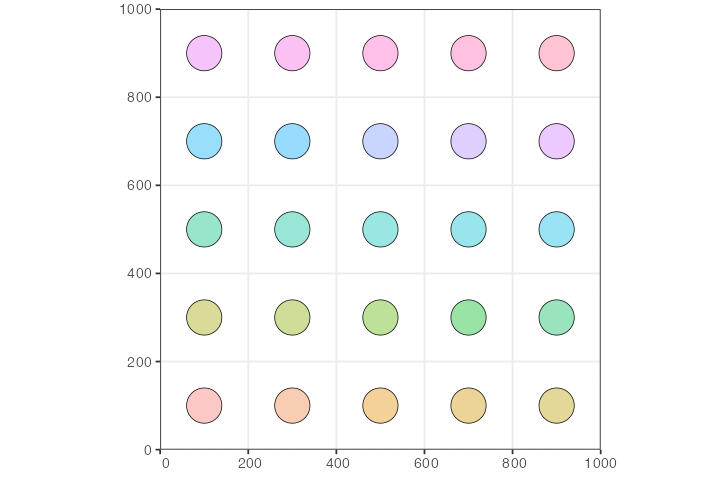

Demes on a regular spatial grid
Source:vignettes/vignette-02-grid-model.Rmd
vignette-02-grid-model.RmdIn this vignette, we will build a simple model of isolated populations laid out on a two-dimensional grid, each exchanging migrants with its immediate neighbors.
The purpose of the vignette is to demonstrate the power of R as a foundation for building complex slendr models from simpler components. Although there is no built-in functionality for such classic “demes on a regular grid” models in the slendr package, the fact that we have the complete functionality of R at our disposal makes it possible to easily program relatively complex models from the convenient environment of R using a couple of simple model-building primitives and automatically execute such models in SLiM.
If you have worked with SLiM before, you will recognize that a nearly identical idea is implemented in SLiM’s Eidos language in section 5.3.3 of the SLiM manual. One difference in this example is that our model is explicitly spatial, unlike the example from the manual where spatiality is only approximated using a random-mating model.
Simple two-dimensional grid model
First, let’s load the slendr R package and create a two-dimensional abstract world map:
Next, we define a helper function which will a) create a single slendr population object, b) place that population at an appropriate coordinate on the lattice on the world map based on the numeric identifier of the population i (where i runs from 1 to \(n \times n\) , n being the total number of demes along one side of the regular grid):
create_pop <- function(i, n_side, map, N, radius) {
dim <- dimensions(map, original = TRUE)
# position of the i-th population on the two-dimensional lattice grid
coords <- c((i - 1) %% n_side, (i - 1) %/% n_side)
center <- coords / n_side * dim + dim / (2 * n_side)
pop <- population(
name = sprintf("pop%d", i),
N = N,
time = 1,
map = map,
center = center + c(attr(map, "xrange")[1], attr(map, "yrange")[1]),
radius = radius
)
}Having defined the population construction function, let’s build our model. Let’s say that we want to create a regular grid of n × n populations, with N individuals in each population:
n <- 5
populations <-
seq(1, n * n) %>%
lapply(create_pop, n_side = n, map = map, N = 100, radius = 40)Let’s plot the whole spatial population configuration, to make sure we set up things correctly:

So far, the way the model is specified, each population would be stuck on its own circular “island”. We can change that by programming gene flow events using the slendr function geneflow(). Again, let’s first program a simple helper function which will generate gene flow events according to neighborhood relationships on the two-dimensional grid, allowing each population to exchange migrants with each of its neighbors (making sure the coordinates of each population stay within the grid using simple modulo arithmetic on the population index i).
set_geneflow <- function(i, n_side, rate, start, end, populations) {
pop <- populations[[i]]
# get the position of the i-th population on the n*n grid
coords <- c((i - 1) %% n_side, (i - 1) %/% n_side)
# get coordinates of the i-th population's neighbors on the grid
neighbor_pos <- list(
c(coords[1] - 1, coords[2]), c(coords[1] + 1, coords[2]),
c(coords[1], coords[2] + 1), c(coords[1], coords[2] - 1)
)
# generate geneflow events for population coordinates inside the grid
geneflows <- lapply(neighbor_pos, function(pos) {
if (any(pos < 0 | pos >= n_side)) return(NULL)
neighbor <- populations[[pos[2] * n_side + pos[1] + 1]]
if (is.null(neighbor)) return(NULL)
rbind(
geneflow(from = pop, to = neighbor, rate = rate, start = start, end = end, overlap = FALSE),
geneflow(from = neighbor, to = pop, rate = rate, start = start, end = end, overlap = FALSE)
)
}) %>%
do.call(rbind, .)
geneflows
}Let’s test this function. What would be the gene flow events of the population in the lower left corner of the grid (so, the very first population in the series)? If everything works, this population should only be allowed to exchange migrants with its neighbor to the right (population number 2) and its neighbor above.
set_geneflow(1, n, rate = 0.1, start = 2, end = 1000, populations)#> from_name to_name tstart tend rate overlap
#> 1 pop1 pop2 2 1000 0.1 FALSE
#> 2 pop2 pop1 2 1000 0.1 FALSE
#> 3 pop1 pop6 2 1000 0.1 FALSE
#> 4 pop6 pop1 2 1000 0.1 FALSELooks right! Let’s generate the entire set of continuous gene flow events:
geneflows <-
seq(1, n * n) %>%
lapply(set_geneflow, n, rate = 0.05, start = 2, end = 1000, populations) %>%
do.call(rbind, .) %>%
unique # filter out duplicate events due to symmetriesThe total number of individual gene flow events is:
nrow(geneflows)#> [1] 80Finally, we can compile the whole model:
model <- compile(
path = file.path(tempdir(), "grid-model"),
populations = populations, geneflow = geneflows,
generation_time = 1, resolution = 10,
competition_dist = 10, mate_dist = 10, dispersal_dist = 10,
sim_length = 1000, overwrite = TRUE
)We can use the function plot_graph() to plot the layout of the population history graph in order to verify that the geneflow events have been specified correctly. The layout of the graph is a little bit wonky and crowded (that’s due to the complexity of spatiotemporal models; the plot_graph() function plots not just populations as nodes but also times of geneflow events and other demographic processes). Still, we can see that the gene flow events between populations have been specified correctly, since all arrows are bidirectional and point only between neighboring demes:
plot_graph(model) + ggplot2::theme(legend.position = "none")
Again, those familiar with the SLiM manual will recognize a similar figure in section 5.3.3.
Finally, we can run our simulation using the slim() function.
slim(model, sequence_length = 1, recombination_rate = 0, method = "batch")Population grid on a real geographic landscape
We can take things one step further. What if we wanted to do a similar thing (i.e. simulate regularly spaced demes) but in a real geographic context?
Let’s zoom in on some interesting part of the world and then create a grid of demes using the same helper function create_pop we defined above (each population boundary being 300 km in diameter):
map <- world(
xrange = c(-25, 55),
yrange = c(-32, 35),
crs = 4326
)
n <- 20
populations <-
seq(1, n * n) %>%
lapply(create_pop, n_side = n, map = map, N = 100, radius = 150e3)Of course, when we lay out a regular grid across a map of the world, some population boundaries would fall outside the African continent. To solve this issue, we will go through the list of all populations and filter to those with at least 50% of their area on land, using another helper function:
continent <- region(
map = map, polygon = list(
c(-10, 35), c(-20, 20), c(-15, 8), c(-10, 5), c(0, 2),
c(20, -40), c(35, -32), c(50, -25), c(55, -10), c(50, 0),
c(53, 13), c(45, 10), c(37, 20), c(32, 30), c(16, 38), c(0, 38)
)
)
check_area <- function(pop, map, continent) {
# total population area
pop_area <- area(pop)
# population area overlapping a map
map_area <- area(overlap(pop, map))
# population area overlapping African continent
continent_area <- area(overlap(pop, continent))
# at least 50% of population's boundary be on land, and it must fall
# on to the African continent itself
if (continent_area == 0 || (map_area / pop_area) < 0.5)
return(NULL)
else
return(pop)
}
filtered <- lapply(populations, check_area, map, continent) %>%
Filter(Negate(is.null), .)Let’s plot the layout of the population grid on the real geographic background:

Next, we would probably set up some scenario of gene flow between subpopulations; perhaps we would be interested in studying how a selected allele spreads through the continent based on some factors of interest. Then, to simulate data from this spatial model, we would first have to compile() it and then run it in SLiM via the slim() function. Given that this is the same process we described in the example above, we won’t be repeating it here.